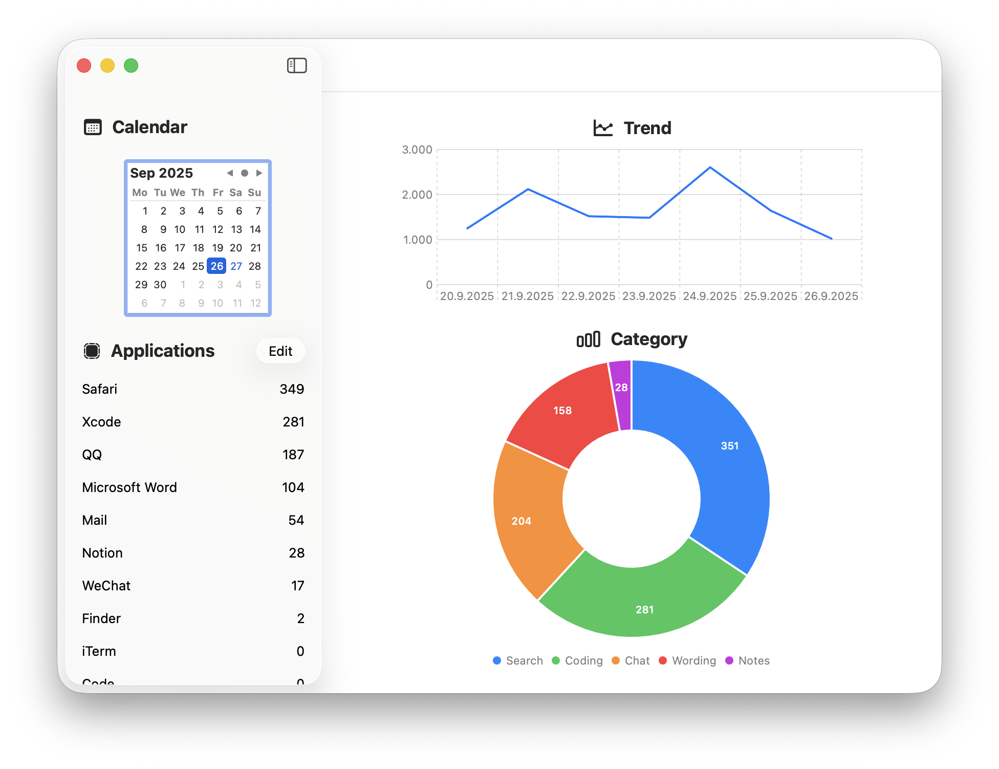

InputCounter Downloads
Latest Version (v1.4)
Download InputCounter 1.4

Release Notes
- Version 1.4 - Liquid Glass style, Performance optimization, Menubar and counting list updates, fix some bugs
- Version 1.3 - Update the categories page, Finder application, icon, menubar, check accessibility, interface, improve architecture
- Version 1.2 - Update the menu bar and icons, fix some bugs
- Version 1.1 - Update the menu bar and icons, fix some bugs
- Version 1.0 - Initial release
Auto Update
InputCounter supports automatic updates via Sparkle. Make sure you have version 1.3 or later installed.
System Requirements